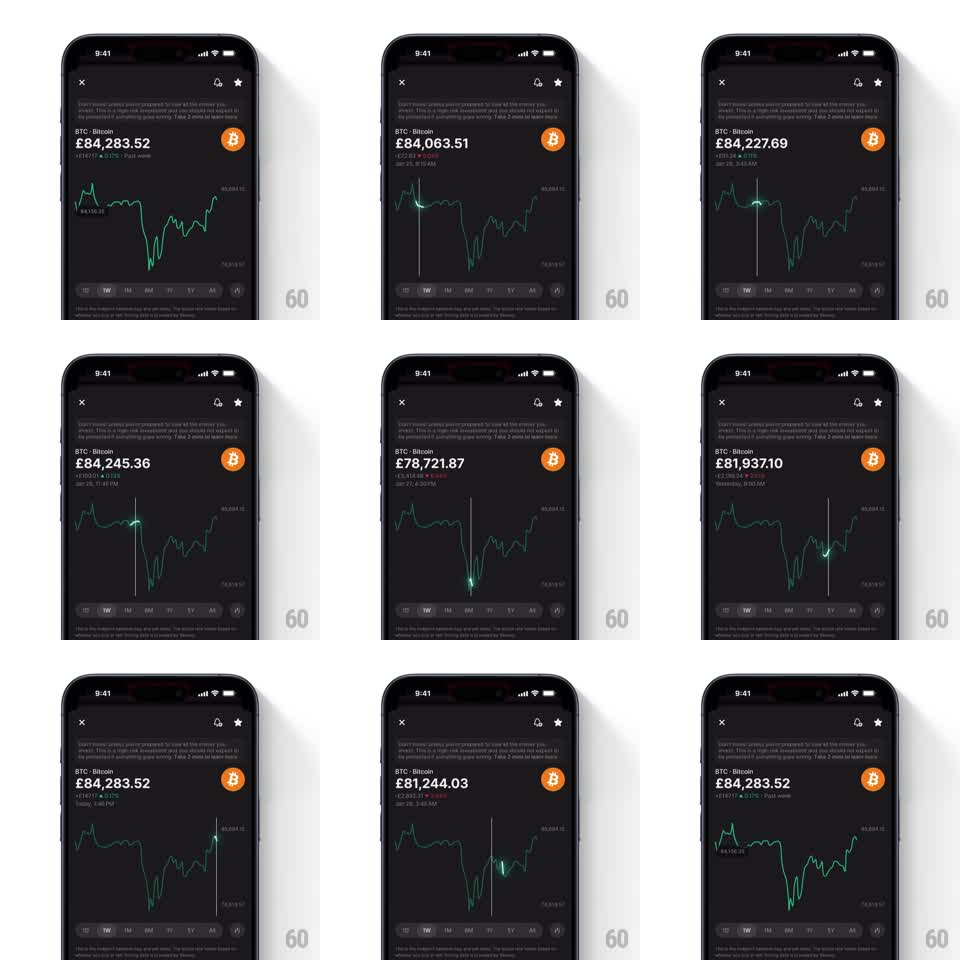

Media
Frame-by-frame

Rebuild this interaction 1:1: Revolut's crypto chart scrub - drag a finger across the price graph and a glowing cursor rides the line while the big price figure counts to the exact scrubbed value and flashes its direction.

Rebuild this interaction 1:1: Revolut's crypto chart scrub - drag a finger across the price graph and a glowing cursor rides the line while the big price figure counts to the exact scrubbed value and flashes its direction. ## Integration Integration: stack-agnostic spec - springs given as stiffness/damping, timed motions as duration + curve; map every value to your framework and animation library of choice. ## Scene Dark coin-detail screen: close/bell/star icons top, coin name + large price figure + delta subline, the line chart filling the mid section, timeframe tabs (1D 1W 1M 6M 1Y All) beneath. ## Motion spec Pattern: direct-manipulation scrub with glow cursor, continuous. - Touch down on the chart: the crosshair appears at the touch x - a thin vertical rule full chart height plus a cursor dot snapped onto the line at that x (fade-in 100ms). - Drag: cursor tracks finger 1:1 horizontally, glued to the line's y; a soft neon glow (blur ~12px, ~60% alpha) blooms around the dot. - The price figure counts continuously to the scrubbed point's value (no lag), and the delta subline swaps to the point's timestamp. - Direction flash: the figure's text color shifts green when the scrubbed value is above the current price, red below - transitions 150ms. - Release: crosshair and glow fade out (150ms), figure counts back to the live price (250ms, ease-out). - Haptic tick every time the cursor crosses a local extreme... omit haptics; visual only. The timeframe tabs stay interactive. ## Calibration - Cursor stays exactly on the line - a free-floating dot above the finger breaks the illusion of touching the data. - Counting is per-frame interpolation, not stepped ticks. ## Reduced motion Same scrub without the glow bloom and without color flashes; crosshair fade shortened to 100ms. ## Don't miss - The glow scales with drag speed slightly (faster drag = slightly larger bloom) - that's what makes it feel alive. - Scrub clamps at chart edges; the figure never shows a value outside the loaded series.